I spent a ridiculous amount of time futzing with the effects on the comic In White Houses, and here's what I learned. If you'd like to copy the technique, go right ahead; I did all of this in Krita, a free, open-source art software which I'd reccommend to anyone.
Here's our starting point.
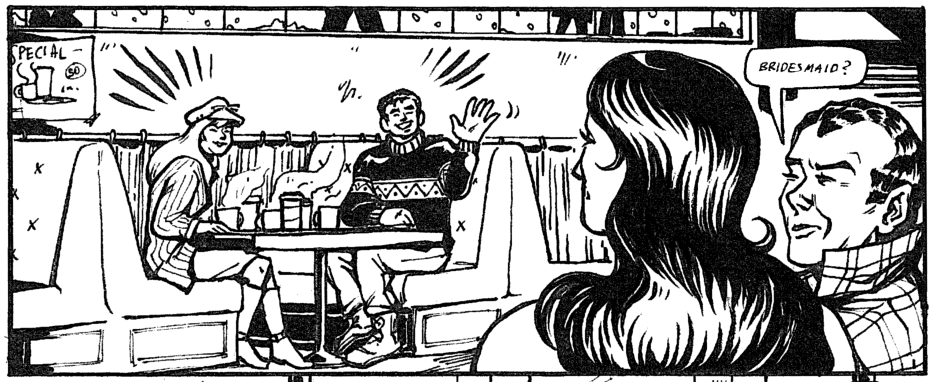Here's our ending point.
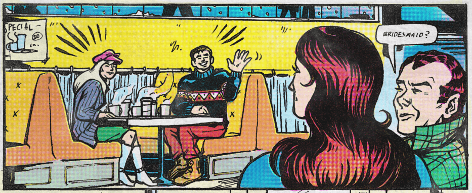Obviously, this will look best with thick black brush-style lineart. There's an unintentional texture bonus to my inks due to the fact that I used real ink on paper, then used a really crappy public library scanner which saved the images as PDFs. (Oops.)
First, I set the lineart to "Multiply" and blocked in colors on the layer below. I colorpicked my choices directly from Silver Age scans.
The limited, eye-searing pallettes of the time were actually quite carefully and practically chosen for the limitations of the medium. Silver Age colorists were limited to hues that printed well based on their Cyan-Magenta-Yellow breakdowns, which the curious can read more about here.
Here's the full pallette of 64:
(Print version from Marvel Age #13 (1984); digitized version by Ed Piskor.)
I'd encourage you to do the colors by hand as much as possible rather than relying on the fill tool. Later in the process, I found that areas of color that hugged the lines with pixel-perfect perfection looked digital no matter what, while the gentle blunders of hand-applied color turned out more authentically organic. Fill in color behind black spaces (like Peter's sweater here) for even richer blacks in the final product.
Confusing Color Terminology Note: Our goal here is to imitate the CMYK printing process in a digital file which is encoded in RGB format. CMYK is for inks, and works subtractively; RGB is for computer screens' pixels, and works additively. This conversion is a little counterintuitive, but here's how it'll work:
Blue = Yellow
Green = Magenta
Red = Cyan
If this sounds weird... Yeah, I know, it is. Hopefully seeing it in action in the next step will make it click.
Krita actually has its own built-in halftone filter! I didn't use it for this, because its results are far too computerized-perfect for my taste, but I might as well show you where it is.
Go to Filter > Artistic > Halftone, and then select the "Independent Channels" mode. You can then mess with the "Transformation" settings to change the size, shape, and intensity of the dots, as well as the angles that each screen is at. (Tradition dictates 90° for Yellow/Blue, 75° for Magenta/Green, and 105° for Cyan/Red.)
The result will be something like this.
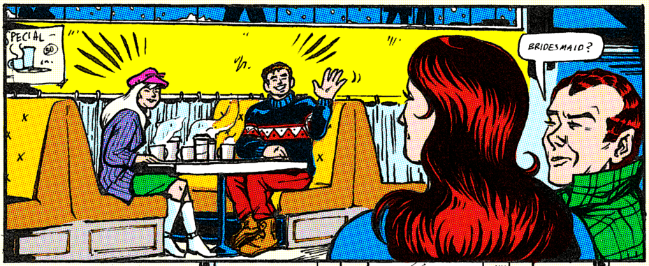This looks good! This looks too good.
I believe in us. We can do worse.
Instead, select the layer that you put the flat colors on, then go to Image > Separate Image to get the greyscale versions for each channel. This will create three new layers, named Red, Green, and Blue.
Here's what my Red layer looks like. It's a little gunked up; don't worry about it.
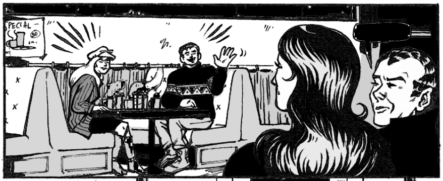Next, we're going to hide the original color layer, put each one of these layers into its own folder, then change the blending mode of the folder to "Copy Red" (or blue, or green depending on layer), which can be found under "Misc". (Make sure you have a solid white layer beneath these folders, which Separate Image may give you, called Alpha.)
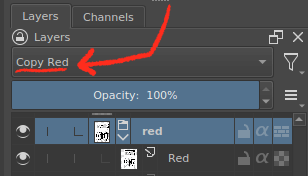Once all three layers have been set to the appropriate blending mode, it will look the same as the original color layer. This is the fun part. Click the "inherit alpha" icon and create a new layer beneath the greyscale one. Here's where we'll add the screentone pattern.
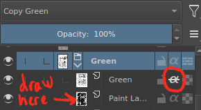The brush I use is one of the defaults, Screentone Pressure. To change the scale or pattern, open the brush options menu.
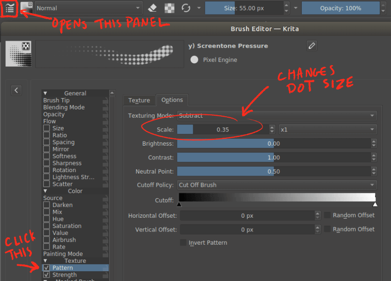Make the brush real big and (on the layer beneath the greyscale) scribble over the entire page until everything is more or less covered in screentone. (Little bits of inconsistency are exactly what we want here, so don't worry too much about pressing too hard or covering every corner.)
Embarrassing Admission of Authorial Incompetence: I cannot figure out how to change the angle of the halftone pattern in the brush settings for the different color layers. If you know how, please tell me.
In the meantime, the easiest way to fake this is just to manually rotate the halftone layer after drawing the pattern in. The more complex way (and the method I chose) is to use tilted screentone patterns (here's my 30° and -30° textures and simple instructions to add them), switching between them in the "Texture" tab of the brush pattern editor.
Here's what just my Green/Magenta layer looks like. I can erase, blur, texture, change opacity, or move around (misregister) this specific color component to my heart's content!
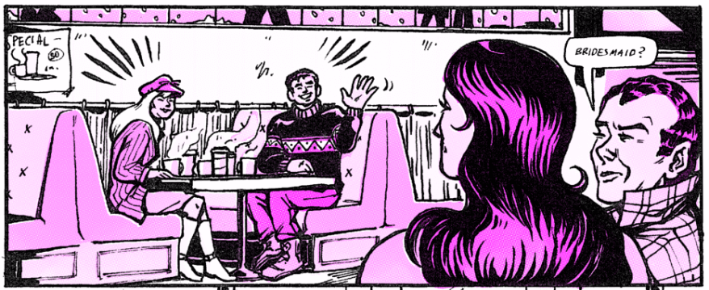When all three layers are done to taste, the final product should look something like this:
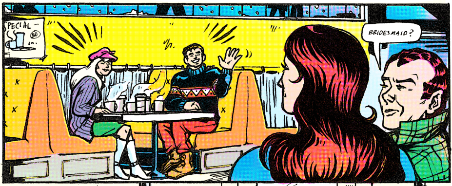Note some of the interesting chromatic aberrations that happen in CMY dot printing. Yellow peeks out from underneath bright red; pink shows up in the faded edges of dark blue; dark green ink rubs off to reveal a surprising orange.
Let's compare it to Krita's auto-generated halftone again for a moment.
Our version is worth the extra work, wouldn't you say?
The last step is to up the grunge.
First, I added some filters (I used "Levels" and "Burn", but do what you'd like) to make the colors a little darker. Dark inks tend to come out muddy and saturated, and light ones more faded.
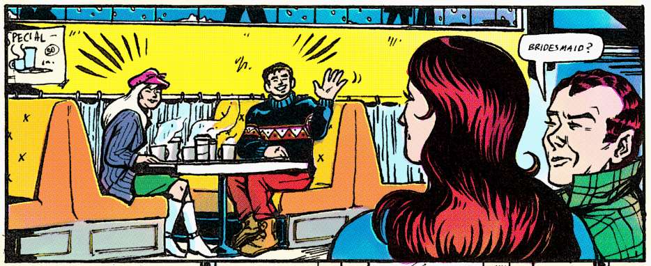Next, paper texture. You can find free to use high-resolution stock scans of newsprint online; set the blending layer to "Multiply" and see what you think.
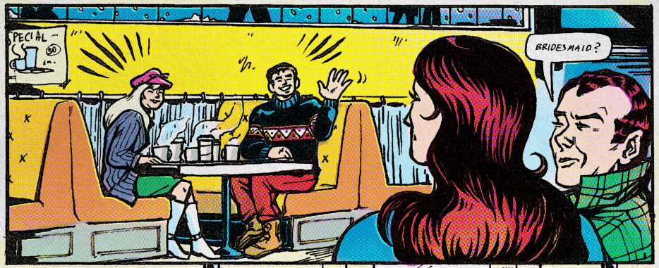While the colors are appropriately weathered, our ink is still supernaturally intact. Let's fade it out a little. I put all the art layers in a folder, clicked the folder's "inherit alpha" icon, and then use a textured brush (I had good results with the default Texture Big brush) to again fill in a new layer underneath.
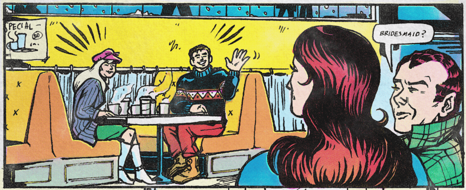We're almost done! It's the last step that really makes it, in my opinion: ink bleedthrough. Take a different piece of art or (as I did) a newsprint page of advertisements, flip it backwards, and put it in the background at very low opacity.
Voilá!
Just to see the consequences of each step lined up:
Pretty neat, eh?
{kind=link}
{kind=link}